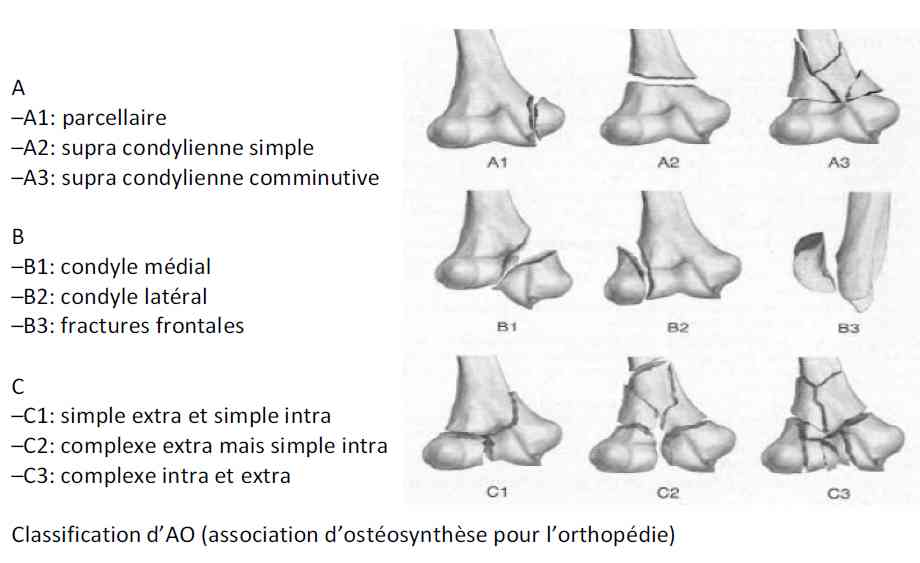
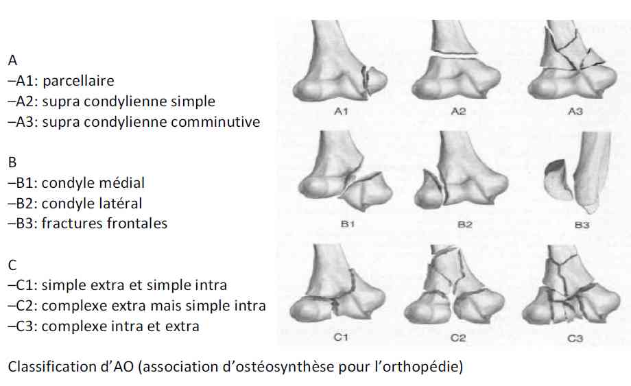
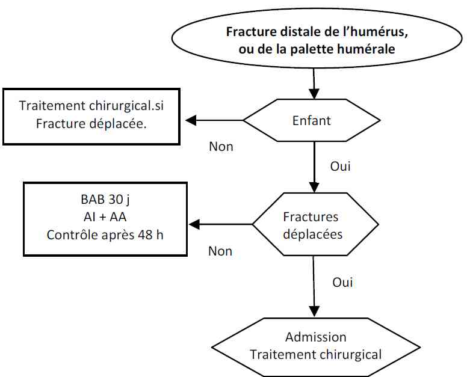
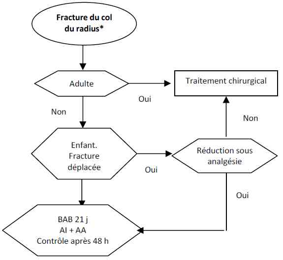
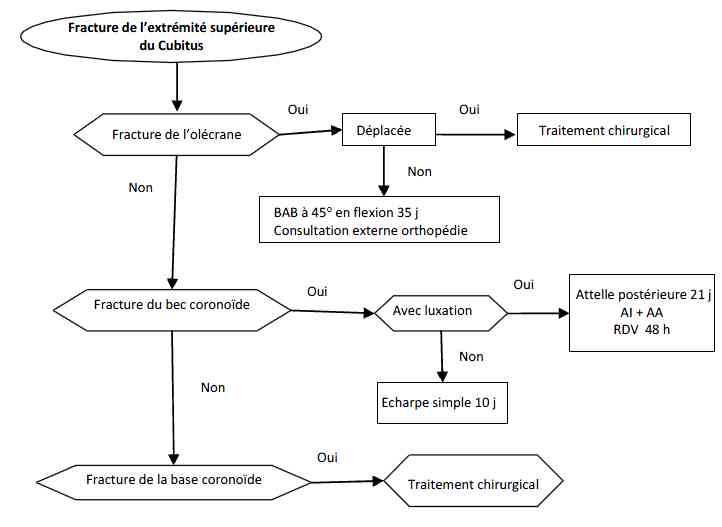
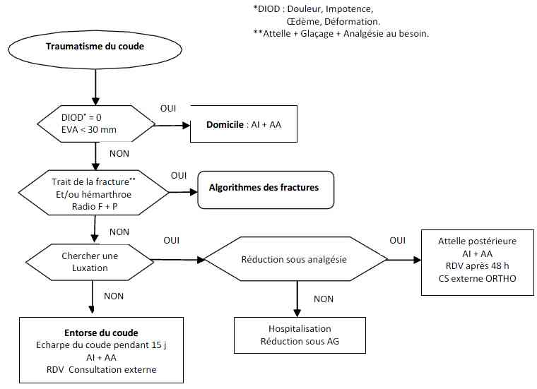

Bienvenue Sur Medical Education
Fractures : coude
Spécialité : pediatrie / traumatologie /
Points importants
-
Les fractures du coude ou les fractures de l’extrémité inférieure de l’humérus sont des lésions localisées à la partie distale du segment brachial, intéressant le ¼ inferieur de l’os dans sa portion extra-articulaire et dans sa portion articulaire tant huméro-ulnaire qu’huméro-radiale
-
Fractures du coude : 16% de l’ensemble des fractures
-
70 % des fractures de l’enfant siègent au membre supérieur
-
Les fractures de l'extrémité inférieure de l'humérus menacent le coude essentiellement d'enraidissement
-
Elles sont le plus souvent articulaires et leur prise en charge obéit aux règles du traitement de la traumatologie osseuse articulaire : réduction exacte, ostéosynthèse stable et rééducation précoce
-
Il faut considérer la proximité des axes vasculo-nerveux, le risque non négligeable d'infection et la propension particulière du coude à s'enraidir
-
Il faut ainsi envisager successivement les bases fonctionnelles et anatomiques, l'anatomie des traits de fractures et leurs classifications, les possibilités thérapeutiques et les règles de mises en application de ces traitements
-
Le gros problème de toutes ces fractures est la récupération de l'extension complète du coude après rééducation intensive
-
Le traitement a pour but de rétablir la congruence articulaire et de permettre une rééducation précoce
-
Classification
-

_843
Classification des fractures du coude
Présentation clinique / CIMU
SIGNES FONCTIONNELS
-
Patient avec impotence fonctionnelle totale
-
Douleur
CONTEXTE
-  _843 Classification des fractures du coude
Présentation clinique / CIMU
SIGNES FONCTIONNELS
- Patient avec impotence fonctionnelle totale
- Douleur
CONTEXTE
Circonstances de survenue
- Deux pics de fréquence l'un entre 20 et 40 ans touchant principalement des sujets masculins l'autre entre 60 et 70 ans à prédominance féminine
-
L'étude des mécanismes note :
-
dans le premier groupe : des traumatismes à haute énergie :
- accidents de la voie publique
- chute d'un lieu élevé
- traumatismes par choc direct (coude de portière)
- dans le deuxième groupe : la fréquence des chutes de sa hauteur
-
dans le premier groupe : des traumatismes à haute énergie :
- Pic de fréquence aussi entre 4 et 8 ans avec une légère prédominance masculine
Facteurs de risque
- Chez les personnes âgées, le facteur de risque le plus important est l'ostéoporose.
EXAMEN CLINIQUE
#MEDIA_915
#A l'inspection
- Patient avec impotence fonctionnelle totale en position du traumatisé du membre supérieur (attitude de Dessault.) : Le patient se tient coude fléchi, avant-bras contre le corps soutenu par le membre supérieur opposé. La douleur est vive, le coude rapidement volumineux
- Coude oedématié et déformé
- Perte des repères anatomiques du coude
- L'ouverture cutanée est fréquente (de 10 à 25 % des cas)
- Rechercher l’axe vasculo-nerveux (nerf radial, extension du poignet ; sensibilité du premier espace inter osseux dorsal)
Les 3 troncs peuvent être atteints de façon variable
- Le nerf cubital est probablement le plus exposé dans les mécanismes de déformation en valgus
- Il faut également rechercher systématiquement une lésion du plexus brachial (douleurs à la percussion en sus et sous-claviculaire, contraction isométrique du deltoïde, des pectoraux, du grand dorsal, recherche d'un syndrome de Claude Bernard Horner)
- Rechercher les lésions capsulo-ligamentaire associées
Chercher une douleur, une déformation et une ecchymose
Chercher une douleur à la flexion-extension du coude
A la palpation, la tête radiale est douloureuse et ce d’autant plus qu’on y associe une pronosupination s’il y a une fracture de l’extrémité supérieure du radius
Elargissement antéro-postérieur
L’avant bras paraît plus court (Luxation du coude ou fracture de l’olécrane)
Pronosupination très douloureuse
- La palpation de la tête radiale est douloureuse et ce d’autant plus qu’on y associe une pronosupination. (Fracture de la tête radiale)
- Gonflement externe, excès de pronation, douleur à la pression de la fossette sous-épicondylienne et surtout blocage à la pronosupination
- L’olécrane fait saillie en arrière
- La palette humérale est en avant
- Extension du poignet incomplète et hyposensibilité du premier espace inter-osseux dorsal (Lésion du nerf radial)
- Mouvement de pronosupination avec son avant-bras difficile et douloureux
Signes paracliniques
BIOLOGIQUES
-
Bilan préopératoire si indication du traitement chirurgical
IMAGERIE
-
Faire des radiographies du coude de face (une face de l’humérus) et profil pour identifier le trait de facture et une éventuelle luxation
-
Les clichés du coude face et profil indiquent les traits de fracture, le déplacement, le volume et la position des fragments quand il y a arrachement
Signes directs de fracture
- Visualisation du trait de fracture
Signes indirects de fracture
-
Déplacement des lignes graisseuses péri articulaires :
- refoulement du liseré antérieur coronoïdien et apparition du liseré postérieur; ces anomalies témoignent d’une HEMARTHROSE
-
Modification des rapports articulaires normaux :
- incidence de profil, le prolongement de la ligne humérale antérieure coupe normalement le noyau condylien dans son tiers postérieur
- incidences face et profil, le prolongement de l’axe de la diaphyse radiale coupe normalement le centre de l’épiphyse condylienne
Si on a un doute sur l'interprétation des radios, demander des clichés du coude normal pour comparaison.
En cas de fracture de la tête radiale, on demande une radiographie du poignet face et profil à la recherche d’une dislocation radio-cubitale inférieure
La radiographie standard ne donne parfois qu’une idée partielle et on a recours à d’autres examens utiles : écho, IRM
Diagnostic différentiel
Traitement
TRAITEMENT PREHOSPITALIER / INTRA HOSPITALIER
-
Un traitement antalgique selon l’EVA est indispensable
-
Leur traitement a pour but de rétablir la congruence articulaire et permettre une rééducation précoce
-
Membre immobilisé dans une attelle radio transparente : faire des radiographies du coude de face et profil pour identifier le trait de facture et éventuelle luxation
-
La qualité du résultat du traitement dépend de la rapidité de la réduction en urgence
-
La prise en charge des traumatismes complexes du coude nécessite une triple compétence orthopédique, vasculaire et plastique d’où l’importance de la cohésion Interservices Urgences, Radiologie, et Chirurgie Orthopédique
Traitement
TRAITEMENT PREHOSPITALIER / INTRA HOSPITALIER
- Un traitement antalgique selon l’EVA est indispensable
- Leur traitement a pour but de rétablir la congruence articulaire et permettre une rééducation précoce
- Membre immobilisé dans une attelle radio transparente : faire des radiographies du coude de face et profil pour identifier le trait de facture et éventuelle luxation
- La qualité du résultat du traitement dépend de la rapidité de la réduction en urgence
- La prise en charge des traumatismes complexes du coude nécessite une triple compétence orthopédique, vasculaire et plastique d’où l’importance de la cohésion Interservices Urgences, Radiologie, et Chirurgie Orthopédique
Méthodes
-
Traitement orthopédique :
- ne s’adresse qu’aux fractures non déplacées
- assuré par une immobilisation plâtrée type BABP coude à 90° de flexion et poignet en position neutre
- doit être de très courte durée, maximum 5-6 semaines
- sera suivie d’une rééducation active
_873
- - -
Plâtre brachio-antéro-palmaire
Autres points à retenir

_844
Algorithme
Algorithme fracture distale de l'humérus
Algorithme fracture du col du radius

_845
Algorithme
Algorithme fracture du col du radius

_846
Algorithme
Algorithme fracture de l'extrémité supérieure du cubitus
Algorithme traumatisme du coude

_847
Algorithme
Algorithme traumatisme du coude
Auteur(s) : Wahid BOUIDA
Mécanisme / description
LE MECANISME LESIONNEL
Algorithme
Bibliographie